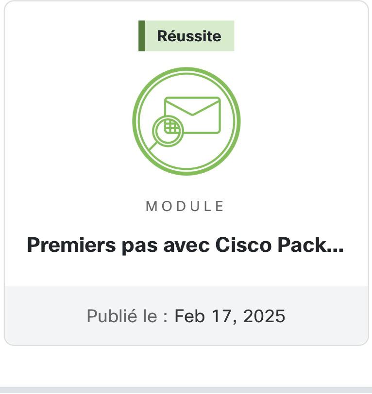
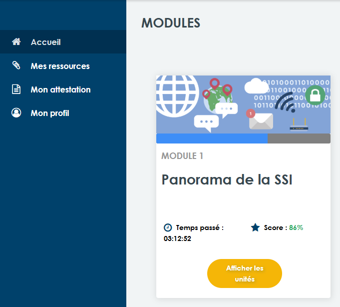
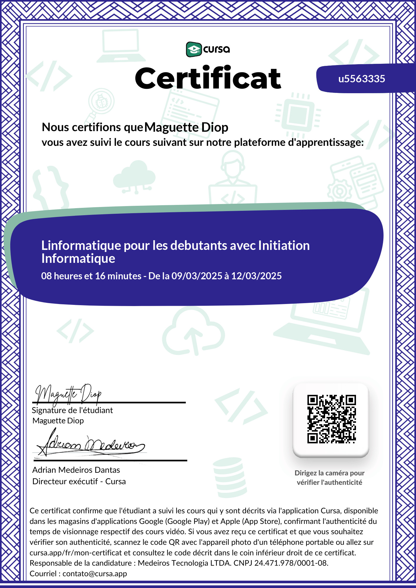

Étudiante en BTS SIO, option SISR
Je m'appelle Maguette Diop, et je suis actuellement en première année de BTS Services Informatiques aux Organisations, option SISR (Solutions d'Infrastructure, Systèmes et Réseaux).
Curieuse et passionnée par l'informatique, je me spécialise dans la gestion des infrastructures IT, la sécurité des systèmes et l'administration réseau. Mon objectif : exceller dans ce domaine et apporter des solutions performantes et sécurisées.
Badge obtenu pour la formation “Les premiers pas avec Cisco” validant les bases des réseaux et de la cybersécurité.
Formation en cybersécurité validée par l'ANSSI.
Badge obtenu pour la formation “Les bases de l’informatique”.
Création d'une infrastructure virtuelle sous Proxmox avec automatisation du déploiement via FOG Project.
Installation et paramétrage complet d’un système de gestion de tickets et inventaire matériel avec l’agent GLPI.
Installation et configuration d’un cloud privé pour synchronisation de fichiers sécurisée sur réseau local.
Mise en place de rôles AD DS, DNS, intégration de postes clients, sécurisation avec GPO.
Mon sujet de veille porte sur la sécurité dans les réseaux Wi-Fi en entreprise. Voici quelques articles récents qui montrent l’évolution de cette thématique et les bonnes pratiques à adopter.
Les bases pour sécuriser un réseau professionnel : mot de passe WPA3, segmentation, firewall, etc.
Lire l’articleUn article qui recense les nouvelles formes d’attaques ciblant les réseaux sans fil (Evil Twin, KRACK, etc.).
Lire l’articleCe guide explique comment bien configurer les bornes Wi-Fi d’une entreprise pour éviter les failles de sécurité.
Lire l’articlePourquoi il est essentiel de ne pas mélanger les accès Wi-Fi : sécurité, surveillance, et risques de propagation.
Lire l’articleUn article qui présente des outils comme Wireshark, Aircrack-ng pour surveiller ou auditer un réseau sans fil.
Lire l’articlePour toute question ou opportunité, n'hésitez pas à me joindre :
Email : md8118968@gmail.com
Téléphone : 0605584988